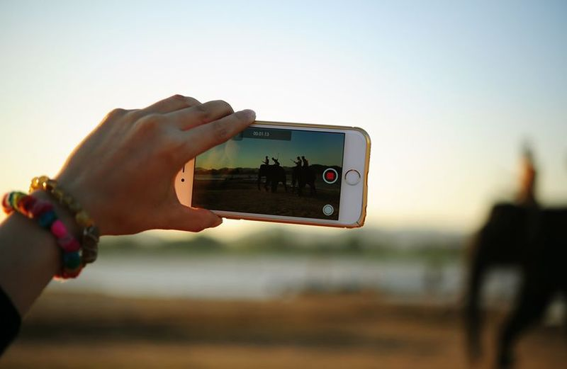

5 mosse per foto perfette
Ah le foto, che passione!📷📷 I social danno sempre maggiore spazio alle foto, e avere dei profili seguiti, attivi e accattivanti diventa sempre più divertente. Le foto oggi comunicano nel mondo reale chi siamo, ma soprattutto chi vogliamo essere. Sul web però le impressioni sulle immagini e sulle parole che si condividono hanno un rischio di interpretazione sbagliata maggiore.
Innanzitutto perchè restano nel tempo e alla mercé degli utenti e soprattutto perchè non è possibile spiegarne il contesto, come invece accade nella realtà. Temi condivisi, stili fotografici, lessico definiscono un proprio io digitale che per forza di cose, si ripercuote con forza sull’io reale, a volte in modo negativo
La comunicazione visiva, essendo perfettamente rispondente ai criteri di rapidità ed emozione è prioritaria nella comunicazione del nuovo millennio. Un'immagine però, contiene una serie di metacomunicazioni, a volte coscienti, a volte subliminali. Sfondi, luminosità, contesto, espressione, posa, vengono racchiusi nel giudizio complessivo dell'autore, spesso in modo incosciente.
Ma quali sono i segreti per una buona foto? Ecco 5 mosse infallibili per selfie al top! 🚀🚀🚀
- ️1️⃣ ️Lo sfondo. Ti ricordi l'epidemia di selfie nel bagno? Ecco, ricordati uno sfondo migliore della tua tazza di casa!🏖️🚽
- ️2️⃣ ️Primo piano! Soggetti bui o troppo lontani, non interessano a nessuno. Punta sulla luminosità e soggetti protagonisti!💁♀️💁♀️
- ️3️⃣ Good fit! Scegliere la foto giusta, significa che deve andar bene in ogni situazione. Perchè i social, non ti fanno scegliere il tuo pubblico, ma mostrano- A- TUTTI. Sicuro che in quella festa lì ti avrebbe visto con gioia la tua vecchia zia?🧟♂️🧟♀️
- ️4️⃣ ️Privacy is sexy! Sì condividere, osare, giocare è divertente. Ma una volta che qualcosa è online, chissà dove può finire. Meglio darsi arie misteriose!🕵️♂️🕵️♂️
- ️5️⃣ ️I social non sono i tuoi confidenti. Sappi che anche le migliori azioni sono oggetto di critiche. Meglio fidarsi di pochi, buoni amici che darsi in pasto ai migliaia di followers, se non vogliamo che diventino haters.